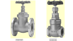

2020年
問題111給水用止水弁の取付けに関する次の記述のうち，最も不適当なものはどれか．
（1）天井内に止水弁を設置する場合は，その近傍に点検口を設ける．
（2）給水立て主管からの各階への分岐管には，止水弁を設ける．
（3）取外しが必要な機器の前後に止水弁を設置する場合は，ねじ込み型とする．
（4）止水弁には，系統の名称札を設ける．
（5）止水弁として，仕切弁が多く使用される．
2020年
問題111正解（3）頻出度AA
取外しが必要な機器には，取り外しが容易なフランジ型とする（2020-111-1図参照）．
2020-111-1図フランジ型（左）とねじ込み型ゲートバルブ

出典株式会社キッツ 製品カタログより
https://kitz-product.com/service/ggc/gate-valve/bronze-brass/
-(5) 仕切弁（ゲート弁，ゲートバルブとも言う．2020-111-2図参照）は全閉か全閉で用いる（流量調整機能はない）．
2020-111-2図仕切弁（ゲート弁，ゲートバルブ）